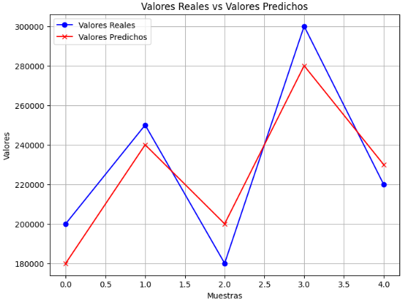

Anexo: Métricas de regresión#
En este punto vamos a explicar cada una de las métricas y para ello vamos a partir de un ejemplo. Imagina que estás construyendo un modelo de regresión para predecir los precios de las casas en función de diferentes características, como el tamaño y la ubicación. Después de entrenar tu modelo, obtendrás predicciones de precios para cada casa en tu conjunto de datos. El MSE se centra en medir cómo de lejos están estas predicciones de los valores reales de los precios.
Para cada predicción, calculas la diferencia entre la predicción y el valor real. Luego, elevas esta diferencia al cuadrado para eliminar signos negativos y resaltar la magnitud del error. El MSE se calcula tomando el promedio de estos errores al cuadrado. En esencia, el MSE representa el promedio de las distancias al cuadrado entre las predicciones y los valores reales. Cuanto menor sea el MSE, mejor se ajustarán las predicciones del modelo a los valores reales.
Vamos a suponer que existen cinco casas con sus valores reales y las predicciones de tu modelo:
| Casa | Valor real | Predicción |
|---|---|---|
| 1 | 200.000 | 180.000 |
| 2 | 250.000 | 240.000 |
| 3 | 180.000 | 200.000 |
| 4 | 300.000 | 280.000 |
| 5 | 220.000 | 230.000 |

Error Cuadrático Medio (MSE)#
El Error Cuadrático Medio (MSE) es una métrica utilizada para evaluar el rendimiento de modelos de regresión. Es especialmente útil para medir cuán cerca están las predicciones del modelo de los valores reales en un conjunto de datos. Este viene dado por la siguiente fórmula:
Donde:
n es el número total de observaciones en el conjunto de datos.
\(y_{i}\) representa el valor real de la observación i.
\(ŷ_{i}\) representa el valor predicho por el modelo para la observación i.
Σ denota la suma, es decir, debes calcular la suma de los cuadrados de las diferencias entre los valores reales y los valores predichos para todas las observaciones y luego dividirla por n.
El MSE mide la magnitud promedio de los errores (diferencias) entre las predicciones hechas por el modelo y los valores reales en el conjunto de datos de prueba. Cuanto menor sea el valor del MSE, mejor será el ajuste del modelo a los datos. Aquí hay algunas interpretaciones clave:
Mayor MSE significa mayor error: Un MSE alto indica que el modelo tiene un error promedio significativamente grande en sus predicciones. En otras palabras, el modelo no se ajusta bien a los datos reales.
MSE igual a cero: Si el MSE es cero, significa que el modelo hace predicciones perfectas que coinciden exactamente con los valores reales. Esto es raro en la práctica y a menudo indica un posible sobreajuste (overfitting) al conjunto de datos de entrenamiento.
Comparación de modelos: El MSE se utiliza comúnmente para comparar varios modelos de regresión. Entre dos modelos, el que tenga un MSE más bajo se considera generalmente mejor en términos de su capacidad para hacer predicciones precisas.
Magnitud en unidades originales: La magnitud del MSE está en las unidades originales del problema. Por ejemplo, si se está trabajando en la predicción de precios de viviendas en dólares, el MSE se medirá en dólares al cuadrado.
Sensible a valores atípicos: El MSE es sensible a valores atípicos en los datos, ya que los errores se elevan al cuadrado. Esto significa que un solo valor atípico puede aumentar significativamente el MSE.
Ejemplo#
Vamos a partir de la base del ejemplo explicado anteriormente para ver como calcular este error. Primero se debe calcular las diferencias entre las predicciones y los valores reales para cada casa:
Diferencias al cuadrado: (200.000 – 180.000)², (250.000 – 240.000)², (180.000 – 200.000)², (300.000 – 280.000)², (220.000 – 230.000)²
Posteriormente se debe calcular el promedio de estas diferencias al cuadrado:
Promedio = (400.000.000 + 100.000.000 + 400.000.000 + 400.000.000 + 100.000.000) / 5 = 280.000.000
El MSE es el promedio calculado:
MSE = 280.000.000
En este ejemplo, el MSE sería 280.000.000, lo que significa que, en promedio, las predicciones de tu modelo están a una distancia de 280.000.000 unidades al cuadrado de los valores reales de los precios de las casas.
¿Cuándo usarlo?#
Emplea el MSE cuando necesites calcular el promedio de las diferencias al cuadrado entre las predicciones y los valores reales. Es útil cuando deseas penalizar más los errores grandes.
Por ejemplo, en la predicción de la temperatura diaria, el MSE mide cuánto se desvían tus predicciones en términos de grados cuadrados.
Raíz del Error Cuadrático Medio (RMSE)#
La Raíz del Error Cuadrático Medio (RMSE) es una métrica que te permite comprender de manera más intuitiva cuán alejadas están las predicciones de un modelo de los valores reales. La fórmula es igual a la del MSE pero añadiendo una raíz cuadrada:
Ejemplo#
Siguiendo el ejemplo de la predicción de precios de casas, veamos cómo se aplica el RMSE. Luego de hacer las predicciones, calculas el cuadrado de la diferencia entre cada predicción y el valor real:
Casa 1: Predicción = 180.000, Valor Real = 200.000, Diferencia Cuadrada = 20.000² = 400.000.000 Casa 2: Predicción = 240.000, Valor Real = 250.000, Diferencia Cuadrada = 10.000² = 100.000.000 Casa 3: Predicción = 200.000, Valor Real = 180.000, Diferencia Cuadrada = 20.000² = 400.000.000 Casa 4: Predicción = 280.000, Valor Real = 300.000, Diferencia Cuadrada = 20.000² = 400.000.000 Casa 5: Predicción = 230.000, Valor Real = 220.000, Diferencia Cuadrada = 10.000² = 100.000.000
Luego, calculas el promedio de estas diferencias al cuadrado y tomas su raíz cuadrada:
RMSE = √[(400.000.000 + 100.000.000 + 400.000.000 + 400.000.000 + 100.000.000) / 5] = √(280.000.000) ≈ 16.733,20
Interpretación#
El RMSE te proporciona una medida intuitiva de cuán lejos, en promedio, están las predicciones de tu modelo de los valores reales. En este caso, un RMSE de aproximadamente 16.733,20 dólares significa que, en promedio, las predicciones difieren por alrededor de 16.733,20 dólares del precio real de las casas.
Al utilizar el RMSE, estás evaluando la magnitud promedio de los errores al considerar las diferencias al cuadrado y su raíz cuadrada. Cuanto menor sea el RMSE, más cercanas serán las predicciones del modelo a los valores reales, lo que indica un mejor ajuste y un rendimiento más preciso en la predicción de precios de las casas.
¿Cuándo usarlo?#
El RMSE es similar al MSE pero proporciona una medida de error más interpretable en la misma unidad que la variable objetivo. Se utiliza cuando deseas tener una idea más intuitiva de la magnitud de los errores.
Por ejemplo, en la predicción de puntajes en exámenes, el RMSE muestra cuánto se desvían tus predicciones en términos de los puntajes reales.
Error Absoluto Medio (MAE)#
El Error Absoluto Medio (MAE) es una medida que te ayuda a entender cuán lejos están, en promedio, las predicciones de un modelo con respecto a los valores reales. Para comprenderlo mejor en el contexto de la predicción de precios de casas, como mencionamos anteriormente, consideremos cómo funciona el MAE en este caso.
Ejemplo#
Vamos a ver el cálculo del MAE con el ejemplo de las casas. Después de hacer predicciones para varios casos, calculas la diferencia absoluta entre cada predicción y su valor real:
Casa 1: Predicción = 180.000, Valor Real = 200.000, Diferencia Absoluta = 20.000 Casa 2: Predicción = 240.000, Valor Real = 250.000, Diferencia Absoluta = 10.000 Casa 3: Predicción = 200.000, Valor Real = 180.000, Diferencia Absoluta = 20.000 Casa 4: Predicción = 280.000, Valor Real = 300.000, Diferencia Absoluta = 20.000 Casa 5: Predicción = 230.000, Valor Real = 220.000, Diferencia Absoluta = 10.000
Para calcular el MAE, sumas todas las diferencias absolutas y las divides por el número total de predicciones:
MAE = (20.000 + 10.000 + 20.000 + 20.000 + 10.000) / 5 = 16.000
#### Interpretación El MAE nos proporciona una perspectiva de cuán cerca o lejos están, en promedio, las predicciones de nuestro modelo de los valores reales. En este caso, un MAE de 16.000 dólares significa que, en promedio, nuestras predicciones se desvían por alrededor de 16.000 dólares del precio real de las casas.
El MAE es una medida directa y fácil de entender. Cuanto menor sea el valor del MAE, más cerca estarán las predicciones del modelo de los valores reales, lo que indica un mejor ajuste y un rendimiento más preciso en la predicción de precios de las casas.
¿Cuándo usarlo?#
Utiliza el MAE cuando necesites calcular el promedio de las diferencias absolutas entre las predicciones y los valores reales. Es apropiado cuando todos los errores, ya sean positivos o negativos, tienen la misma importancia.
Por ejemplo, en un problema de regresión para predecir el tiempo de entrega de paquetes, el MAE puede medir cuánto se desvían tus estimaciones de tiempo de entrega en minutos.
## Coeficiente de Determinación (\(R^2\)) El Coeficiente de Determinación (R²) es una métrica que te ayuda a entender qué proporción de la variabilidad en los valores reales está siendo capturada por tu modelo. Siguiendo el ejemplo de la predicción de precios de casas, exploraremos cómo se aplica el R².
Donde:
\(μ_{y}\) es la media (promedio) de los valores de la variable dependiente y se calcula de la siguiente manera \(\sum_{i=1}^{n}y_{i}\).
Ejemplo#
Imagina que has entrenado un modelo para predecir los precios de casas. El R² se enfoca en cuánto de la variabilidad en los precios reales es explicada por las predicciones del modelo. Si todas las predicciones del modelo fueran exactas, el R² sería 1. Si las predicciones fueran equivalentes a la media de los valores reales, el R² sería 0.
Para calcular el R², se compara la variabilidad total en los valores reales con la variabilidad que el modelo está capturando. Si el modelo se ajusta bien, capturará una gran proporción de la variabilidad total.
Interpretación#
Si el R² es 0.75, significa que el 75% de la variabilidad en los valores reales está siendo explicada por las predicciones del modelo. Esto indica que el modelo está capturando tres cuartos de la variabilidad presente en los datos reales.
Por otro lado, si el R² es bajo, como 0.25, significa que solo el 25% de la variabilidad en los valores reales está siendo capturada por el modelo. En este caso, el modelo podría no estar ajustándose bien a los datos o podría haber otros factores no considerados en las predicciones.
¿Cuándo usarlo?#
El R² es útil para medir la capacidad de un modelo de regresión para explicar la variabilidad en los datos. Se utiliza para evaluar la calidad del ajuste del modelo.
Por ejemplo, en la predicción de precios de casas en función de características como el tamaño y el número de habitaciones, el R² mide cuánto de la variación en los precios es capturada por el modelo.
Error Porcentual Absoluto Medio (MAPE)#
El Error Porcentual Absoluto Medio (MAPE) es una métrica que te permite medir la precisión relativa de las predicciones de un modelo en términos porcentuales. En el contexto de la predicción de precios de casas, exploraremos cómo funciona el MAPE.
Ejemplo#
Supongamos que has desarrollado un modelo para predecir los precios de casas. El MAPE se enfoca en cuán cerca están las predicciones de tu modelo de los valores reales en términos porcentuales.
Para calcular el MAPE, primero calculas el error absoluto porcentual para cada predicción, que es la diferencia absoluta entre la predicción y el valor real dividida por el valor real, y luego calculas el promedio de estos errores porcentuales.
Interpretación#
Un MAPE de 10% significa que, en promedio, las predicciones de tu modelo se desvían en un 10% de los valores reales. Esto indica que las predicciones tienden a estar en promedio dentro del 10% de diferencia de los valores reales.
Un MAPE más bajo indica una mayor precisión relativa de las predicciones, mientras que un MAPE más alto sugiere que las predicciones tienden a tener mayores desviaciones porcentuales de los valores reales.
En resumen, el MAPE te proporciona una medida porcentual de qué tan precisas son las predicciones de tu modelo en comparación con los valores reales. Es útil para comprender la magnitud relativa de los errores y puede ser especialmente importante en situaciones donde la precisión en términos porcentuales es crucial.
¿Cuándo usarlo?#
El MAPE es útil cuando deseas calcular el error porcentual promedio entre las predicciones y los valores reales. Es especialmente útil cuando los errores porcentuales son más informativos que los errores absolutos.
Por ejemplo, en la predicción de la demanda de productos en una tienda, el MAPE puede medir cuánto difieren las estimaciones de ventas en términos porcentuales.